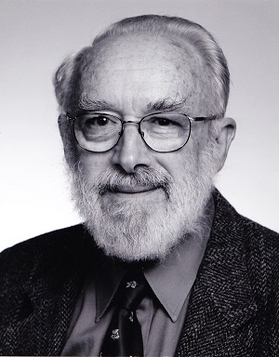

Introducing Expected Information Gain
In Bayesian experiment design (Rainforth et al. 2024), a commonly used utility function is the information gain, where we are comparing the entropy of the distributions before and after observing an addition point. Assuming that our existing data set is denoted by \(\mathcal{D}\) and the posterior distribution is \(p(\cdot | \mathcal{D})\). If we make an observation at \(x\) and observe \(y\), our new data set will become \(\mathcal{D}^+ := \mathcal{D} \cup \{(x, y)\}\). This will then correspond to a new posterior \(p(\cdot | \mathcal{D}^+)\).
Given those, the information gain (IG) is given by:
\[ IG(x) = H(p(\cdot | \mathcal{D})) - H(p(\cdot | \mathcal{D}^+)). \]
Consider our distribution is a Gaussian process (GP) with mean zero and kernel \(k\), and the posterior is the posterior predictive distribution of this GP on some finite set of test points \(x_*\) with size \(m\). We also assume the current data set \(\mathcal{D} := \{(x_i, y_i)\}_{i=1}^{n}\) is of size \(n\) and the observations with additive, centered, independent Gaussian noise of variance \(\sigma^2\).
We will also use the following notations to denote the various Gram matrices using kernel \(k\)
- \(K = k(X,X)\), size \(n \times n\).
- \(K_* = k(X, x_*)\), size \(n \times m\).
- \(K_{**} = k(x_*, x_*)\), size \(m \times m\).
The posterior is therefore (see here for a detailed derivation)
\[ \begin{split} p(y^* | x^*, \mathcal{D}, \sigma^2) &\sim \mathcal{N}(\mu_{y^*|\mathcal{D}}, \Sigma_{y^*|\mathcal{D}}) \\ &\mu_{y^*|\mathcal{D}} = K_*^T (K + \sigma^2 I_n)^{-1} y\\ &\Sigma_{y^*|\mathcal{D}} = K_{**} - K_*^T (K + \sigma^2 I_n)^{-1} K_*. \end{split} \]
After adding a new observation at \(x\), we will have an updated dataset \(\mathcal{D}^+\) with \(X^+ = X \cup \{x\}\) and have an updated posterior using the following Gram matrices
- \(K^+ = k(X^+,X^+)\), size \((n+1) \times (n+1)\).
- \(K_*^+ = k(X^+, x_*)\), size \((n+1) \times m\).
- \(K_{**}^+ = K_{**} = k(x_*, x_*)\), size \(m \times m\).
So, the updated posterior’s covariance matrix is
\[ \Sigma_{y^*|\mathcal{D}^+} = K_{**}^+ - K_*^{+T} (K^+ + \sigma^2 I_{n+1})^{-1} K_*^+ \]
Thus, the information gain can be written as
\[ IG(x) = H(p(\cdot | \mathcal{D})) - H(p(\cdot | \mathcal{D}^+)) \] where using the definition of the entropy of multivariate Gaussian yields
\[ \begin{split} IG(x) &= \frac{1}{2} \log \det \Sigma_{y^*|\mathcal{D}} - \frac{1}{2} \log \det \Sigma_{y^*|\mathcal{D}^+} \\ &= \frac{1}{2} \log \det \Big( K_{**} - K_*^T (K + \delta^2 I_n)^{-1} K_* \Big) - \frac{1}{2} \log \det \Big( K_{**}^+ - K_*^{+T} (K^+ + \sigma^2 I_{n+1})^{-1} K_*^+\Big) \end{split} \] Since \(IG(x)\) is independent of \(y | x\), the acquisition function expected information gain (EIG) is therefore
\[ EIG(x) = \mathbb{E}_{y}[IG(x)] = IG(x) \] Furthermore, we can remove several terms when we do \(\arg\max_x\) for the acquisition function optimisation, and get
\[ EIG(x) = - \log \det \Big( K_{**}^+ - K_*^{+T} (K^+ + \sigma^2 I_{n+1})^{-1} K_*^+\Big). \]
In the current setup, the information gain is tractable due to nice properties of multivariate Gaussians and GP regression conjugacies. Albeit tractable, the immediate formulation of the expected information gain has undesirable computational costs which we will elaborate below. After a preliminary attempt to reformulate EIG in order to reduce the computation cost, we will present a different perspective of EIG using mutual information, which enables an EIG formulation with low computational costs.
EIG Reformualtion - a first attempt
We will consider the naive computation of the above \(EIG(x)\) expression. One should note that in the active learning settings, we would often be in the scenarios where \(m >> n\). An improved approach of computing the same quantity is presented below, leveraging the matrix determinant lemma.
Naive Implementation
We wish to compute
\[ EIG(x) = - \log\det \Big( K_{**}^+ - K_*^{+T} (K^+ + \sigma^2 I_{n+1})^{-1} K_*^+\Big). \]
| Order | Expression | Cost |
|---|---|---|
| 1 | \((K^+ + \delta^2 I_{n+1})^{-1}\) | \(O((n+1)^3)\) |
| 2 | \((K^+ + \delta^2 I_{n+1})^{-1} K_*^+\) | \(O((n+1)^2 m)\) |
| 3 | \(K_*^{+T} (K^+ + \delta^2 I_{n+1})^{-1}K_*^+\) | \(O(m (n+1)^2)\) |
| 4 | \(K^+ - K_*^{+T} (K^+ + \delta^2 I_{n+1})^{-1} K_*^+\) | \(O(m^2)\) |
| 5 | \(-\log\det\big(K_{**}^+ - K_*^{+T} (K^+ + \delta^2 I_{n+1})^{-1} K_*^+ \big)\) | \(O({\color{red}m^3})\) |
So the cost is
\[ O((n+1)^3 + (n+1)^2 m + m^2 (n+1) + m^2 + {\color{red}m^3}). \] We will need to compute the above quantity \(m\) times for comparison \(\arg\max_x\), thus the full costs is
\[ O((n+1)^3m + (n+1)^2 m^2 + m^3 (n+1) + m^3 + {\color{red}m^4}). \]
Nontrivial Implementation
We use the matrix determinant identity:
\[ \det(A + UWV^T) = \det(A) \det(W) \det(W + V^T A^{-1} U) \]
where here
- \(A = K_{**}^+\)
- \(U = -K_*^{+T}\)
- \(W = (K^+ + \sigma^2 I_{n+1})^{-1}\)
- \(V = K_*^+\)
Thus, we wish to compute
\[ EIG(x) = -\log \left[ \det(K_{**}^+) \cdot 1/ \det(K^+ + \sigma^2 I_{n+1}) \cdot \det \big(K^+ + \sigma^2 I_{n+1}- K_*^+ (K_{**}^+)^{-1}K_*^{+T} \big) \right] \]
Since \(K_{**}\) is positive semi-definite, its determinant is always non-negative so we can ignore it in comparisons.
| Order | Expression | Cost |
|---|---|---|
| 1 | \(K_{**}^+ + \sigma^2 I_{n+1}\) | \(O((n+1)^2)\) |
| 2 | \(\det(K^+ + \sigma^2 I_{n+1})\) | \(O((n+1)^3)\) |
| 3 | \((K_{**}^+)^{-1}\) | \(O(m^3)\), reusable |
| 4 | \((K_{**}^+)^{-1}K_*^{+T}\) | \(O(m^2(n+1))\) |
| 5 | \(K_*^+ (K_{**}^+)^{-1}K_*^{+T}\) | \(O(m(n+1)^2)\) |
| 6 | \((K^+ + \sigma^2 I_{n+1}) - K_*^+ (K_{**}^+)^{-1}K_*^{+T}\) | \(O((n+1)^2)\) |
| 7 | \(\det\big( (K^+ + \sigma^2 I_{n+1}) - K_*^+ (K_{**}^+)^{-1}K_*^{+T} \big)\) | \(O((n+1)^3)\) |
| 8 | \(\log \left[ 1/ \det(K^+ + \sigma^2 I_{n+1}) \cdot \det \big(K^+ + \sigma^2 I_{n+1}- K_*^+ (K_{**}^+)^{-1}K_*^{+T} \big) \right]\) | \(O(1)\) |
So the cost is \[ O((n+1)^2 + (n+1)^3 + {\color{blue}m^3} + m^2(n+1) + m(n+1)^2). \]
We will need to compute the above quantity \(m\) times for comparison \(\arg\max_x\), thus the full costs is
\[ O((n+1)^2m + (n+1)^3m + {\color{blue}m^3} + m^3(n+1) + m^2(n+1)^2). \]
EIG Reformualtion - a second attempt
EIG over \(n\) Observations
Instead of the one-step EIG update (the difference in entropies between the posteriors with and without an additional observation), below we derive the EIG of the entirety of \(n\) observations. This quantity could be used as the objective for non-myopic policies, such as the case of deep adaptive designs (Foster et al. 2021).
Consider we have the prior (a GP with kernel \(k\)) \(p(\cdot)\) and we have \(n\) observations \(\mathcal{D} = \{(x_i, y_i)\}_{i=1}^n =: \{ (\boldsymbol{x}, \boldsymbol{y})\}\) which yields the posterior \(p(\cdot | \mathcal{D})\), the information gain quantity of interest would be
\[ IG(\boldsymbol{x}) = H(p(\cdot)) - H(p(\cdot | \mathcal{D})) = MI(p(\cdot); \boldsymbol{y}) \] where the last equality follows from the definition of mutual information.
Again, if we consider those GPs on a fixed, finite set of test points \(x_*\) like before, we would be able to show the following:
\[ \begin{split} IG(\boldsymbol{x}) &= H(p(\cdot)) - H(p(\cdot | \mathcal{D})) \\ &= \frac{1}{2} \log \det K_{**} - \frac{1}{2} \log \det \left[ K_{**} - K_*^T (K + \sigma^2 I_n)^{-1} K_*\right] \\ &= - \frac{1}{2} \log \det \left[K_{**}^{-1}( K_{**} - K_*^T (K + \sigma^2 I_n)^{-1} K_*)\right] \\ &= - \frac{1}{2} \log \det \left[I_m - K_{**}^{-1} K_*^T (K + \sigma^2 I_n)^{-1} K_*)\right] \\ \end{split} \] where, as before, we use the shorthand notations
- \(K = k(X,X)\), size \(n \times n\).
- \(K_* = k(X, x_*)\), size \(n \times m\).
- \(K_{**} = k(x_*, x_*)\), size \(m \times m\).
Low Cost EIG Formulation
The above computation is at least cubic in \(m\) due to the determinant operation. In fact, using the symmetric property of the mutual information, we could obtain a much better expression.
Note that \[MI(X; Y) = H(X) - H(X|Y) = H(Y) - H(Y|X).\] We first denote the prior as \(f\), the observations \(\boldsymbol{y_A}\) at locations \(\boldsymbol{x_A}\) with observational noise \(\boldsymbol{\varepsilon}\) so \(\boldsymbol{y_A} = f(\boldsymbol{x_A}) + \boldsymbol{\varepsilon}\).
The information gain from prior to posterior after observing \(\boldsymbol{y_A}\) can be written as the mutual information
\[ IG(\boldsymbol{x_A}) = H(f) - H(f |\boldsymbol{y_A}) = MI(f; \boldsymbol{y_A}) = H(\boldsymbol{y_A}) - H(\boldsymbol{y_A} | f). \]
Notice that since \(y_A = f(\boldsymbol{x_A}) + \boldsymbol{\varepsilon}\), it is a multivariate with covariance \(K(\boldsymbol{x_A}, \boldsymbol{x_A}) + \sigma^2 I\). In addition, \(\boldsymbol{y_A} | f\) has covariance being just \(\sigma^2 I\). Therefore, we have
\[ \begin{split} IG(\boldsymbol{x_A}) &= H(\boldsymbol{y_A}) - H(\boldsymbol{y_A} | f) \\ &= \log \det (K(\boldsymbol{x_A}, \boldsymbol{x_A}) + \sigma^2 I) - \log \det (\sigma^2 I) \\ &= \log \det (I + \sigma^{-2} K(\boldsymbol{x_A}, \boldsymbol{x_A})) \end{split} \]
which is the expression used in Section 2.2 of Srinivas et al. (2010), and is computationally cheap.
Using the same concept, we can rewrite the EIG of posteriors between \(\mathcal{D} = \{ (\boldsymbol{x_A}, \boldsymbol{y_A}) \}\) and \(\mathcal{D}^+ = \{ (\boldsymbol{x_B}, \boldsymbol{y_B}) \}\) (i.e. subject to one more observation). We have the information gain
\[ \begin{split} IG(x) &= H(f | \boldsymbol{y_A}) - H(f | \boldsymbol{y_B}) \\ &= - H(f) + H(f | \boldsymbol{y_A}) + H(f) - H(f | \boldsymbol{y_B}) \\ &= - [H(f) - H(f | \boldsymbol{y_A})] + [H(f) - H(f | \boldsymbol{y_B})] \\ &= - [IG(\boldsymbol{x_A}) ] + [IG(\boldsymbol{x_B})] \\ &= - \log \det (I + \sigma^{-2} K(\boldsymbol{x_A}, \boldsymbol{x_A})) + \log \det (I + \sigma^{-2} K(\boldsymbol{x_B}, \boldsymbol{x_B})). \end{split} \]
Notice that the first term is the same when comparing across different \(x\), thus can be omitted. This formulation’s cost is therefore
\[ O((n+1)^2 + (n+1)^3) \]
for one-time computation and the overall cost for comparison \(\arg\max_x\) is
\[ O(m(n+1)^2 + m(n+1)^3). \]
One should note that similar rewriting of entropy-related objectives using the symmetry of mutual information also exist in the Bayesian optimization literature with the entropy search and the predictive entropy search (e.g. Hernández-Lobato, Hoffman, and Ghahramani (2014)).